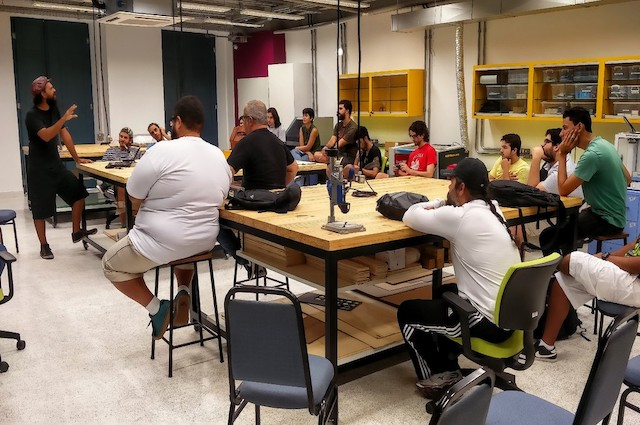
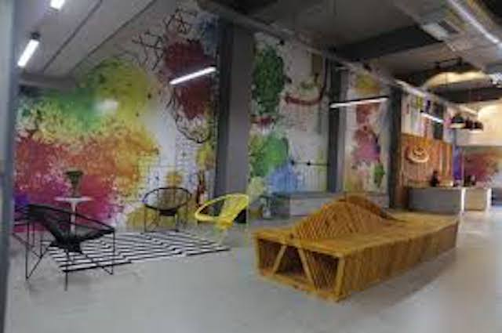
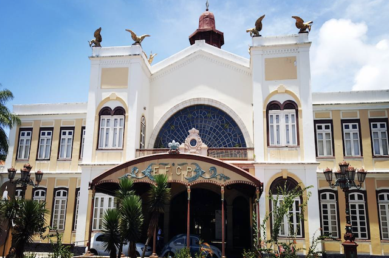
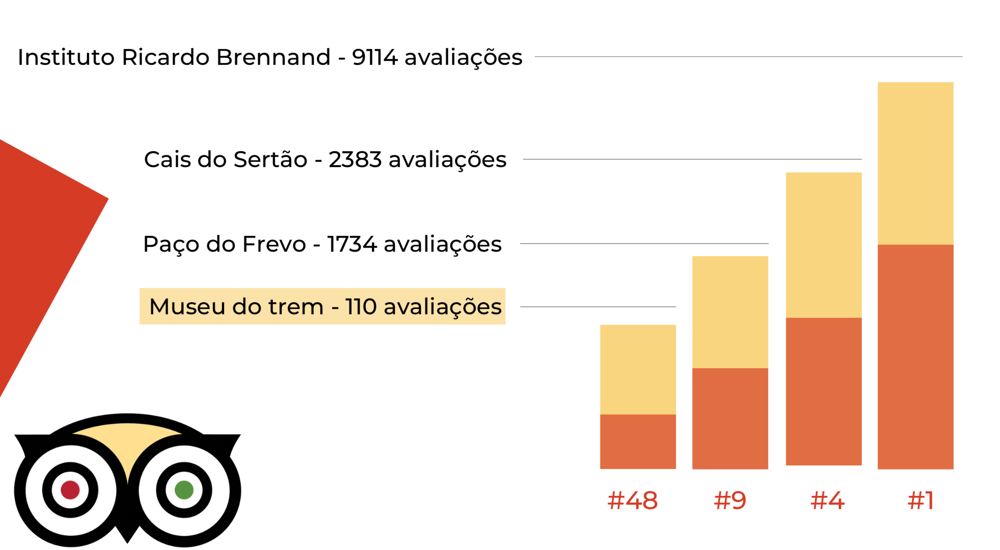

LOUCOmotiva é um projeto em conjunto do Museu do Trem, localizado em Recife-PE, em parceria com a Cesar School e o L.O.U.Co(laboratório de objetos urbanos conectados). Com o objetivo de trazer uma união entre museus e tecnologia inovadora de forma que melhore a forma de interação entre intermediadores de museus, nós do grupo, iremos desenvolver uma solução para este problema.
L.O.U.Co
Cesar School
Museu do Trem do Recife
O Museu do Trem do Recife, apesar de ser um museu recém inalgurado, têm estatisticas bastantes satisfatórias em relação ao publico expontanêo. Além disso tem uma boa visibilidade no TripAdvisor, levando em consideração que é um museu bem menor e de iniciativa pública em relação com os quais é comparado na imagem abaixo.
